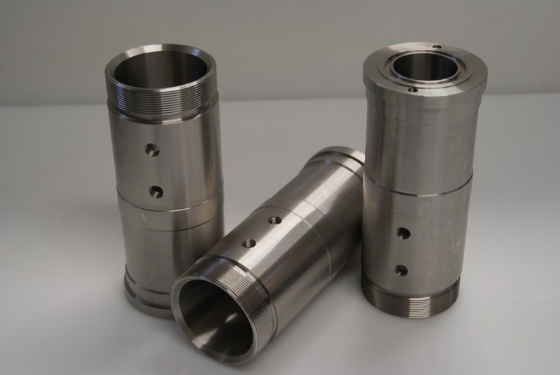
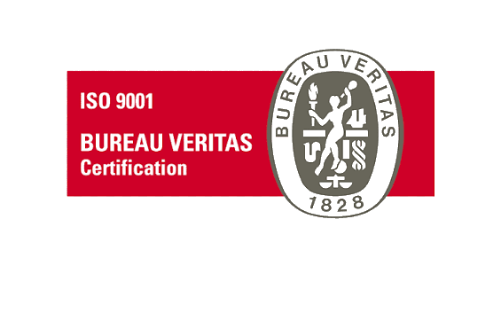

Desde 1952 fabricamos y reparamos piezas para la industria: torneado, fresado, alesado y corte láser, con la exigencia de una empresa certificada ISO 9001 y el trato de un taller familiar.

Mecanizados C&C es una empresa privada e independiente de Bahía Blanca, dedicada a la fabricación y reparación de insumos para la industria en general, aportando conocimiento técnico transmitido de generación en generación.
Don Carlos Campello Valero funda la empresa familiar y desarrolla el primer producto propio: el quemador a kerosén.
Comienza la fabricación de turbinas neumáticas para odontología, siendo pioneros en América Latina en este producto.
Con el Polo Petroquímico, la empresa incursiona en nuevos desafíos con normas nacionales e internacionales.
Nace Mecanizados C&C. Certificación ISO 9001, tecnología CNC, láser y diseño con SolidWorks.
Somos una empresa familiar con tradición innovadora.
RAMIRO F. CAMPELLO Y CARLOS M. CAMPELLO — TITULARESTrabajamos acero, aluminio, bronce e inoxidable con maquinaria propia y control numérico, para piezas de una sola unidad o series completas.
Centros de mecanizado por control numérico para piezas de alta precisión y series repetibles.
Torneado convencional y CNC de piezas cilíndricas en acero, bronce, aluminio e inoxidable.
Fresado de precisión para piezas de geometría compleja y matricería.
Alesado de alta exactitud para ajustes críticos en sistemas mecánicos.
Contamos con certificación en la norma ISO 9001 para satisfacer las necesidades de clientes cada vez más exigentes, con inversión constante en tecnología: tornos y centros de mecanizado por computadora, grabado y escaneo láser, e ingeniería inversa con SolidWorks.
Uno de nuestros aportes más importantes a la industria local fue un contrato de 3 años con la Central Termoeléctrica Piedra Buena, que mejoró su eficiencia del 68% al 98%.

Una selección de trabajos realizados en taller:
Respondemos cada consulta como parte de nuestro trabajo. Escribinos, llamanos o visitá el taller en Bahía Blanca.